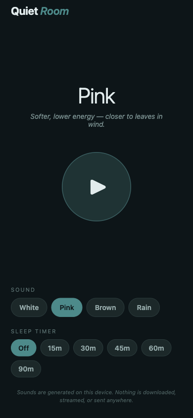
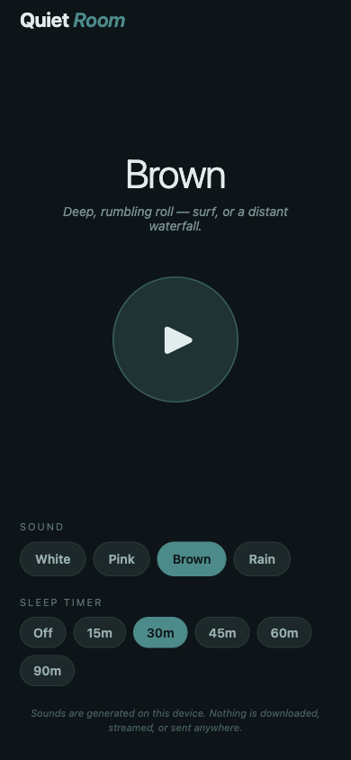

White noise
Even hiss across all frequencies — the crisp 'old radio between stations' sound. Best for masking conversation.
Now in beta · iOS via Expo Go
Ambient noise for iPhone, generated on this device. No streaming, no audio files shipped, no ads between tracks, no account.
Offline-firstNo adsNo streamingOpen source
Features
The whole feature set, plainly listed — no upsells gating the basics.
Even hiss across all frequencies — the crisp 'old radio between stations' sound. Best for masking conversation.
Softer, lower energy than white. Closer to leaves moving in wind. Studies suggest it helps with sleep.
Deep, rumbling — like distant surf or a waterfall. Cuts through hard-edge city sound.
Low-passed pink noise plus scattered impulses to suggest drops. Steady and soothing without being literal.
Set 15 / 30 / 45 / 60 / 90 minutes; playback stops cleanly when it expires. Off disables it.
Sounds are synthesized in JavaScript on first play (Paul Kellett's pink filter, integrated Brownian for brown, low-passed pink + impulses for rain), cached as WAV files. Zero network.
How to play
A few short steps. The app gets out of your way after that.
Tap one of the four chips at the bottom — White, Pink, Brown, Rain. The big label updates so you know what's queued.
First play synthesizes the WAV (a second or two), then loops it. Subsequent plays start instantly because the file is cached.
Pick a duration in the Sleep timer row. With a timer set, playback stops automatically when it expires. Tap Off to disable.
Tap a different sound chip while playing and the app loads the new sound — no manual stop/start needed.
The app sets the iOS audio category to playback. Lock-screen suspends audio (background audio requires native entitlements not in this Expo Go build).
Screenshots
Captured from the running app at iPhone 14 viewport.

